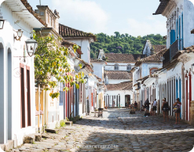
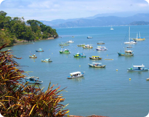

Named for a local swamp fish, Paraty sits on Brazil's southeastern coast, 125 miles south of Rio, with the Bocaino Mountains at its back. The small colonial town's center is a national historic monument with well-preserved buildings on its pedestrian-only streets. Take a boat trip out into the bay to the flotillas of islands and coves nearby. Explore sugarcane plantations and hike or take a train through Atlantica Forest. Keep an eye out for the monkeys that roam the cobblestone streets.
The town is located on the Bay of Ilha Grande, which is dotted with many tropical islands. Rising as high as 1,300 meters behind the town are tropical forests, mountains, and waterfalls. It is the southernmost and westernmost city in Rio de Janeiro state.
The city's economic activity revived as a port for a new boom, the coffee trade of the Paraiba do Sul River Valley in the early 19th century, until a railway along the valley created cheaper transport to the port of Rio de Janeiro. Another smaller revival came late in the 19th century with the production of cachaça, which is a sugarcane-derived spirit best known today as the basis for Brazil's most famous cocktail, the caipirinha.
There are many musical and cultural events, the most prominent of which is the FLIP – Festa Literaria Internacional de Paraty (International Literary Festival of Paraty). The town is also known for its local festivals on Catholic holy dates, such as the Feast of the Holy Ghost.
City size
Weather
Safety

